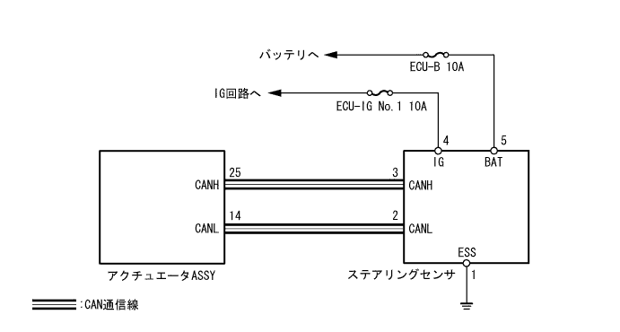
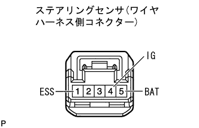

DTC C1231/31 Steering Angle Sensor System Malfunction |
| DTC No. | DTC Detection Condition | DTC Output Related Items |
|---|---|---|
| C1231/31 | When an abnormal signal from the steering sensor is received with IG1 terminal voltage at 9.5to17.4V |
|

| Step 1 | Check DTC |
Clear the DTCs. (see)
Turn IG OFF.
Turn the IG ON again and check that no CAN communication malfunction DTC is output. (see)
Drive at 35km/h or more and turn the steering wheel, and check that no speed sensor malfunction or yaw rate sensor malfunction DTC is output. (see)
| Result | Proceed to |
|---|---|
| No CAN communication malfunction, speed sensor malfunction or yaw rate sensor malfunction code is output | A |
| CAN communication malfunction code is output | B |
| Speed sensor or yaw rate sensor malfunction code is output | C |
|
| ||||
|
| ||||
| A | |
| Step 2 | Inspect Wire Harness and Connector (Steering Sensor Power Source System) |
Check that the steering sensor connector is free of malfunctions such as loose engagement or disconnection.
Disconnect the steering sensor connector.
Check that the connector case and terminals are free of deformation and corrosion.
 |
Using the SST (Toyota electrical tester), measure the voltage and resistance between the wire harness side connector of the steering sensor and body ground.
| Tester Connection | Condition | Standard |
|---|---|---|
| 4 (IG) - Body ground | IG ON | 11 to 14V |
| 5 (BAT) - Body ground | Always |
| Tester Connection | Condition | Standard |
|---|---|---|
| 1 (ESS) - Body ground | Always | Below 1 Ω |
|
| ||||
| OK | ||
| ||